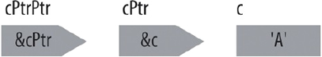

首页 > 编程笔记
C语言指针的运算
本文讨论使用指针进行的运算，最重要的运算是获取指针所引用的对象或函数。也可以比较指针，使用指针来遍历一个内存区域。
使用间接运算符有时候被称为解引用（dereferencing）一个指针。指针指向的内存位置被认为存储有一个对象，指针的类型决定了该对象的类型。例如，当用 int 指针获取一个特定内存位置，读出或写入的也是 int 类型的对象。
与乘法运算符 * 不同，间接运算符 * 是一元运算符，也就是说，间接运算符只有一个操作数。在例 1 中，ptr 指向变量 x。因此，表达式 *ptr 等效于变量 x 本身。
【例1】解引用一个指针
不要混淆指针声明中的星号（*）和间接运算符。声明中的语法可以被视为展示了如何使用指针。如下例所示：
如上述声明，ptr 具有 double* 类型（读为：“指向double的指针”）。因此，表达式 *ptr 类型是 double。
当然，间接运算符 * 必须匹配一个具有有效地址的指针。这个用法要求在编写程序时需要特别小心！例 1 中，如果没有 ptr=&x 为 ptr 分配有效地址，那么所有包含 *ptr 的语句都是没有意义的（解引用一个没有定义的指针），有可能会造成程序崩溃。
一个指针变量，其本身也是内存中的一个对象，也就是说，其他指针可以指向该指针。若想创建指针的指针，必须使用两个星号，如下例所示：
表达式 *cPtrPtr 当前生成 char 指针 cPtr，而 **cPtrPtr 的值是 char 变量 c。图 1 展示了这样的关系。
指针的指针不仅限于两个层次的间接运算。也可以根据自己的需要定义多个层次的间接运算。然而，不能通过多次使用地址运算符 & 来取得指针的值：
上例中的第二个初始化语句是非法的：表达式（&c）不可以作为 & 的操作数，因为它不是一个左值。换句话说，在本例中，不存在可以让 cPtrPtr 指向的 char 指针。
如果将一个指针采用引用方式传入函数，以让函数可以修改该指针的值，那么该函数的参数就是指针的指针。下面简单的例子是一个函数，动态地创建一个新的记录，将其地址存储在一个指针变量中：
下列语句是调用函数 newRecord（）的一种可能方式：
表达式 *pRecord 生成新的记录，并且（*pRecord）.key 是该记录中的 key 成员。表达式（*pRecord）.key 中的括号是有必要的，因为点运算符（.）比间接运算符（*）具有更高的优先级。
不用上面运算符与括号结合的方式，也可以使用箭头运算符 -> 来获取结构或联合的成员。如果 p 是一个指向结构或联合的指针，并且该结构或联合具有成员 m，那么表达式 p->m 等效于（*P）.m。因此，下面的语句将一个值赋值给 pRecord 所指的 key 成员：
对于指向对象的指针，可以进行下列的运算：
(1) 对一个指针执行整数加法和减法操作。
(2) 两个指针相减。
(3) 比较两个指针。
当将两个指针相减时，这两个指针必须具有相同的基本类型，但是类型限定符则不需要一样。而且，可以使用相等运算符（==和！=）来将任何指针与空指针常量比较，也可以将对象指针与 void 指针比较。
这里所描述的三种指针运算，通常只针对指向数组元素的指针时才有用。为了展示这些运算的作用，假设有两个指针 p1 和 p2，它们都指向数组 a 内的元素：
(1) 如果 p1 指向数组元素 a[i]，并且 n 是一个整数，那么表达式 p2=p1+n 的使得 p2 指向数组元素 a[i+n]（假设 i+n 仍在数组 a 的索引范围内）。
(2) 减法 p2-p1 的结果是获得两个指针之间数组元素的数量，结果的类型是 ptrdiff_t。该类型定义在头文件 stddef.h 中，通常定义成 int。在赋值运算 p2=p1+n 之后，表达式 p2-p1 的值是 n。
(3) 如果 p2 所引用的元素比 p1 所引用的元素具有更大的索引值，则 p1<li="">。
因为一个数组的名称会隐式地转换为指向数组第一个元素的指针，所以可以把数组的下标表示法替换为指针算术：
(1) 表达式 a+i 是指向 a[i] 的指针，而 *（a+i）的值是元素 a[i]。
(2) 表达式 p1-a 的结果是 p1 指向元素的索引值 i。
在例 2 中，函数 selection_sortf（）对 float 元素数组进行排序，使用选择性排序算法。这个函数使用指针而非索引完成对 float 元素数组的排序，函数swapf（）维持不变。
【例2】指针版本的函数 selection_sortf（）
通常来讲，指针版本的函数比使用索引版本的函数具有更高效率，因为使用索引 i 获取数组 a 的元素，表达式为 a[i] 或 *（a+i），它涉及将 a 的地址加上 i*sizeof（元素类型）的值，以获得对应的数组元素地址。指针版本相比之下需要的运算就少得多了，因为指针本身可递增，不需要索引，并且指针直接指向所需的元素。
使用指针读取与修改对象
间接运算符 * 生成内存中的位置，该位置的地址存储在一个指针中。如果 ptr 是一个指针，那么 *ptr 就是 ptr 所指向的对象（或函数）。使用间接运算符有时候被称为解引用（dereferencing）一个指针。指针指向的内存位置被认为存储有一个对象，指针的类型决定了该对象的类型。例如，当用 int 指针获取一个特定内存位置，读出或写入的也是 int 类型的对象。
与乘法运算符 * 不同，间接运算符 * 是一元运算符，也就是说，间接运算符只有一个操作数。在例 1 中，ptr 指向变量 x。因此，表达式 *ptr 等效于变量 x 本身。
【例1】解引用一个指针
double x, y, *ptr; // 两个double变量和一个double指针 ptr = &x; // 使得ptr指向x *ptr = 7.8; // 对变量x赋值7.8 *ptr *= 2.5; // 将x乘以2.5 y = *ptr + 0.5; // 将加法x+0.5的结果赋值给y
不要混淆指针声明中的星号（*）和间接运算符。声明中的语法可以被视为展示了如何使用指针。如下例所示：
double *ptr;
如上述声明，ptr 具有 double* 类型（读为：“指向double的指针”）。因此，表达式 *ptr 类型是 double。
当然，间接运算符 * 必须匹配一个具有有效地址的指针。这个用法要求在编写程序时需要特别小心！例 1 中，如果没有 ptr=&x 为 ptr 分配有效地址，那么所有包含 *ptr 的语句都是没有意义的（解引用一个没有定义的指针），有可能会造成程序崩溃。
一个指针变量，其本身也是内存中的一个对象，也就是说，其他指针可以指向该指针。若想创建指针的指针，必须使用两个星号，如下例所示：
char c = 'A', *cPtr = &c, **cPtrPtr = &cPtr;
表达式 *cPtrPtr 当前生成 char 指针 cPtr，而 **cPtrPtr 的值是 char 变量 c。图 1 展示了这样的关系。

图1
图1
指针的指针不仅限于两个层次的间接运算。也可以根据自己的需要定义多个层次的间接运算。然而，不能通过多次使用地址运算符 & 来取得指针的值：
char c = 'A', **cPtrPtr = &(&c); // 错误!
上例中的第二个初始化语句是非法的：表达式（&c）不可以作为 & 的操作数，因为它不是一个左值。换句话说，在本例中，不存在可以让 cPtrPtr 指向的 char 指针。
如果将一个指针采用引用方式传入函数，以让函数可以修改该指针的值，那么该函数的参数就是指针的指针。下面简单的例子是一个函数，动态地创建一个新的记录，将其地址存储在一个指针变量中：
#include <stdlib.h>
// 记录的类型：
typedef struct { long key; /* ... */ } Record;
_Bool newRecord( Record **ppRecord )
{
*ppRecord = malloc( sizeof(Record) );
if ( *ppRecord != NULL )
{
/* ...初始化新记录的成员... */
return 1;
}
else
return 0;
}
下列语句是调用函数 newRecord（）的一种可能方式：
Record *pRecord = NULL;
if ( newRecord( &pRecord) )
{
/* ...pRecord现在指向了一个新的Record对象... */
}
表达式 *pRecord 生成新的记录，并且（*pRecord）.key 是该记录中的 key 成员。表达式（*pRecord）.key 中的括号是有必要的，因为点运算符（.）比间接运算符（*）具有更高的优先级。
不用上面运算符与括号结合的方式，也可以使用箭头运算符 -> 来获取结构或联合的成员。如果 p 是一个指向结构或联合的指针，并且该结构或联合具有成员 m，那么表达式 p->m 等效于（*P）.m。因此，下面的语句将一个值赋值给 pRecord 所指的 key 成员：
pRecord->key = 123456L;
修改和比较指针
除了使用赋值操作让一个指针引用一个给定的对象或函数，也可以使用算术运算来修改一个对象指针。当进行指针算术运算（pointer arithmetic）时，编译器会自动在运算中采用指针所指类型的空间大小。对于指向对象的指针，可以进行下列的运算：
(1) 对一个指针执行整数加法和减法操作。
(2) 两个指针相减。
(3) 比较两个指针。
当将两个指针相减时，这两个指针必须具有相同的基本类型，但是类型限定符则不需要一样。而且，可以使用相等运算符（==和！=）来将任何指针与空指针常量比较，也可以将对象指针与 void 指针比较。
这里所描述的三种指针运算，通常只针对指向数组元素的指针时才有用。为了展示这些运算的作用，假设有两个指针 p1 和 p2，它们都指向数组 a 内的元素：
(1) 如果 p1 指向数组元素 a[i]，并且 n 是一个整数，那么表达式 p2=p1+n 的使得 p2 指向数组元素 a[i+n]（假设 i+n 仍在数组 a 的索引范围内）。
(2) 减法 p2-p1 的结果是获得两个指针之间数组元素的数量，结果的类型是 ptrdiff_t。该类型定义在头文件 stddef.h 中，通常定义成 int。在赋值运算 p2=p1+n 之后，表达式 p2-p1 的值是 n。
(3) 如果 p2 所引用的元素比 p1 所引用的元素具有更大的索引值，则 p1<li="">。
因为一个数组的名称会隐式地转换为指向数组第一个元素的指针，所以可以把数组的下标表示法替换为指针算术：
(1) 表达式 a+i 是指向 a[i] 的指针，而 *（a+i）的值是元素 a[i]。
(2) 表达式 p1-a 的结果是 p1 指向元素的索引值 i。
在例 2 中，函数 selection_sortf（）对 float 元素数组进行排序，使用选择性排序算法。这个函数使用指针而非索引完成对 float 元素数组的排序，函数swapf（）维持不变。
【例2】指针版本的函数 selection_sortf（）
// 函数swapf()交换两个float变量的值
// 参数：两个指向float的指针
inline void swapf( float *p1, float *p2 )
{
float tmp = *p1; *p1 = *p2; *p2 = tmp; // 交换*p1和*p2
}
// 函数selection_sortf()使用选择性排序算法，对float元素数组排序
// 参数：一个float元素数组，以及它的长度
void selection_sortf( float a[], int n ) // 对有n个float元素的数组a进行排序
{
if ( n <= 1 ) return; // 不进行排序
register float *last = a + n-1, // 指向最后一个元素的指针
*p, // 指向一个选定元素的指针
*minPtr; // 指向当前最小值元素的指针
for ( ; a < last; ++a ) // 将指针遍历整个数组
{
minPtr = a; // 在a所指的元素与最后一个元素之间
for ( p = a+1; p <= last; ++p ) // 找到最小值元素
if ( *p < *minPtr )
minPtr = p;
swapf( a, minPtr ); // 将最小值元素与a所指的元素交换
}
}
通常来讲，指针版本的函数比使用索引版本的函数具有更高效率，因为使用索引 i 获取数组 a 的元素，表达式为 a[i] 或 *（a+i），它涉及将 a 的地址加上 i*sizeof（元素类型）的值，以获得对应的数组元素地址。指针版本相比之下需要的运算就少得多了，因为指针本身可递增，不需要索引，并且指针直接指向所需的元素。
关注公众号「站长严长生」，在手机上阅读所有教程，随时随地都能学习。内含一款搜索神器，免费下载全网书籍和视频。

微信扫码关注公众号